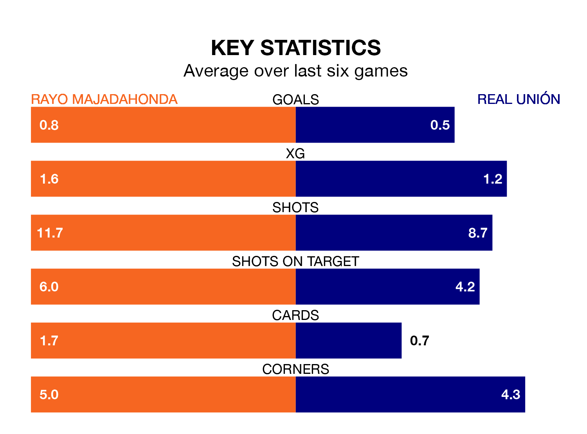

Rayo Majadahonda welcome Real Unión to Miniestadio Cerro del Espino on Saturday looking to pick up points to end their three-game losing streak.
Rayo's struggles have left them with just three points from their last six Primera Division RFEF Group 1 matches, while their opponents have earned six from a possible 18.
Rayo are bottom of the table after 26 games, of which they have won four and drawn 10, earning 22 points.
Unión are eight places ahead of the home team in 12th, with eight wins and seven draws putting them on 31 points.
With 21 goals in 26 games so far this season, Rayo are scoring at below the league average rate with 0.8 goals per game. And they are conceding more than average, letting in 35 goals at a rate of 1.3 per game.
The visitors, meanwhile, are above average scorers, with 1.2 goals per game, compared to a league average of 1.0. They have conceded 1.3 goals per game.
In the last 10 years, Rayo and Unión have played each other on nine occasions. They won four each, and they drew once.
On average, Rayo scored 0.7 goals and Unión 1.0 in those matches.
Their last meeting was on September 10, when Unión won 4-0 at home.
Rayo's last match was on Saturday, a 1-0 loss against CD Teruel.
Unión drew 0-0 with Barcelona B last time out, on Sunday.
Updated: 09:34 (UTC), 08/03/24